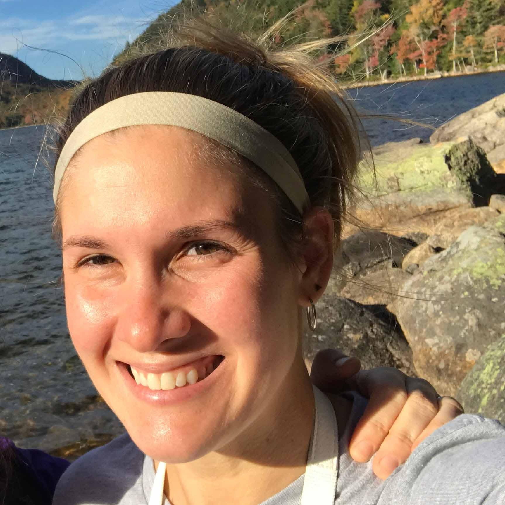

About Me

This past weekend I was in Colorado and before I went out there my friend texted me and asked if I
wanted to go mountain biking. I said yes, and so the morning of our big day, I looked in the mirror and
said to myself “You hardly ever see these friends, and you are a tremendously annoying person, don’t you
DARE be yourself” so off we went on our day of fun!
The first stop was renting a bike. Now, did we spend hours doing internet research, making a detailed
spreadsheet and doing a thorough cost-benefit analysis of all the possible bike rental places? No! Who
does that? We just walked around, and picked one that looked good. After that we made three extra trips
to the car and back because planning ahead is for nerds and we got to really enjoy that parking garage!
Next we take the gondola up to the mountain top. Now, once there, did we follow the signs for bikes, or
look at a map? No! We followed our hearts! Which led us in a giant U shape, down the mountain and then
back up! Riding uphill half a mile at 10,000 feet is exciting! What an experience! We continued to throw
caution to the wind and not look at a map, which is how the first mountain bike trail we found was a
black diamond! How lucky! Now since I haven’t figured out how to navigate mountain biking consent, down
I went! And over those hairpin turns and giant rocks everywhere I got to really think about my life, and
the decisions I’ve made…. Including choosing the cheapest health insurance plan at work. After a while I
thought, “time to spice it up” so I got off my bike and decided to run along side of it down the
mountain, I mean, what a fun choice! Eventually I made it to the bottom and met up with my friends. We
had just a quick light chat where no one said anything like “I hate you for this” and I decided I needed
some Me Time, so off I went on my own.
Finally I was free to really live it up, and by that I mean put on a podcast with the dulcet tones of
Terry Gross. And I decided, what really would be fun would be if I made it to the bottom of the mountain
before the rest of my friends then I could spend that time doing thorough research on Yelp so I could
pretend to find our dinner spot organically.